Each skill is a ladder: a fully worked example in the solid-framed box, then four YOUR TURN questions in the dashed box — same skill, new numbers, no help. Work all four before checking the gray check: line; a tracker tick needs all four right first time.
This document covers §11.1–11.3 and stops there. Zumdahl's §11.4–11.7 — vapour pressure lowering, boiling point elevation, freezing point depression, osmotic pressure, the whole of colligative properties — and §11.8 on colloids are not on the AP CED and are not treated here at all. That is not an oversight; it is most of a chapter you do not have to learn. What is left is not small. §11.1–11.3 feeds CED topic 3.7 (Solutions and Mixtures) and 3.10 (Solubility), both inside Unit 3 — the heaviest unit on the exam at 18–22%. Concentration calculations in particular turn up everywhere: in titrations, in equilibrium, in kinetics, in electrochemistry. The chapter in one sentence. A solution is a mixture at the particle level, and every question about one is either how much is in there (§11.1) or why did it dissolve at all (§11.2–11.3).Ladder 1 • Molarity
ZUM §11.1Molarity is moles of solute per litre of solution — not per litre of solvent. The distinction is the whole of Ladder 1.
\[ M = \frac{\text{moles of solute}}{\text{litres of \textbf{solution}}} \]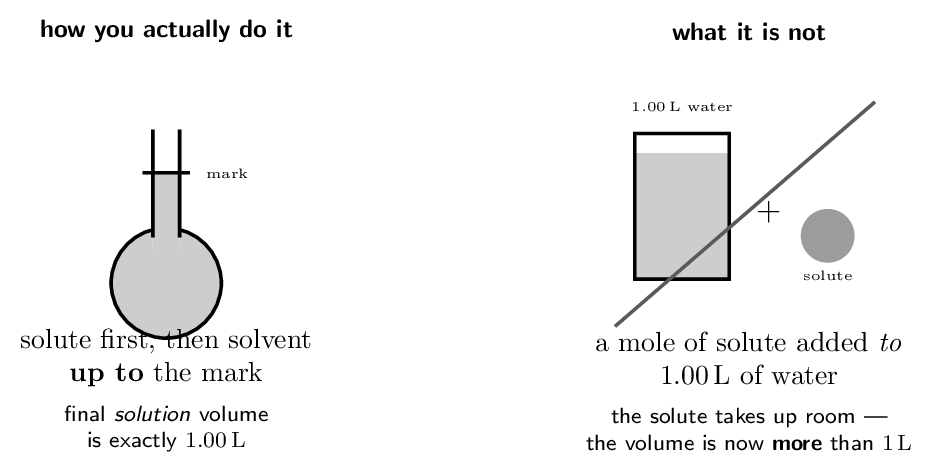
- Find the molarity of 0.500 mol of \(\ce{KCl}\) in
2.00 L of solution.
- Find the molarity of 40.0 g of \(\ce{NaOH}\)
(\(M = 40.00\,\mathrm{g/mol}\)) in 250. mL
of solution.
- How many moles of solute are in 50.0 mL of
2.00 M \(\ce{HCl}\)?
- Why is molarity defined per litre of solution rather than per
litre of solvent? the solute itself occupies volume
(a) 0.250 M (b) 4.00 M (c) 0.100 mol (d) the solute itself occupies volume
Ladder 2 • Dilution
ZUM §11.1Adding solvent changes the volume and the concentration but not the number of moles of solute. That single conserved quantity is the whole calculation.
\[ \underbrace{M_{1}V_{1}}_{\text{moles before}} \;=\; \underbrace{M_{2}V_{2}}_{\text{moles after}} \]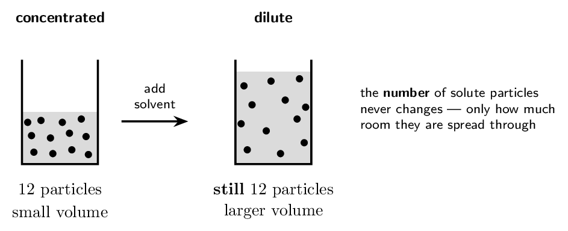
Rearrange for what you want, then substitute: \[ M_{2} = \frac{M_{1}V_{1}}{V_{2}} = \frac{6.00 \times 50.0}{250.} = \mathbf{1.20\,\mathrm{M}} \]
Note the units did not need converting. \(V_{1}\) and \(V_{2}\) appear as a ratio, so as long as both are in the same unit the millilitres cancel. This is the one place in solution work where you may safely leave millilitres alone. (b) What volume of 6.00 M \(\ce{HCl}\) is needed to make 2.00 L of 0.150 M \(\ce{HCl}\)? \[ V_{1} = \frac{M_{2}V_{2}}{M_{1}} = \frac{0.150 \times 2.00}{6.00} = 0.0500\,\mathrm{L} = \mathbf{50.0\,\mathrm{mL}} \] And the safety rule that goes with it. You would measure that 50.0 mL of acid and add it to water already in the flask — never water to concentrated acid. Dissolving concentrated acid is strongly exothermic, and adding water to it can boil the surface and spit acid out of the container.- 25.0 mL of 12.0 M \(\ce{HCl}\) is diluted
to 500. mL. Find the new molarity.
- What volume of 2.00 M stock makes
100. mL of 0.400 M solution?
- 100. mL of 0.50 M \(\ce{NaCl}\) has
100. mL of water added. Find the new molarity.
- Does diluting a solution change the number of moles of solute?
Explain. no — only the volume changes
(a) 0.600 M (b) 20.0 mL (c) 0.25 M (d) no — only the volume changes
Ladder 3 • Mass percent, ppm and ppb
ZUM §11.1When the solute is very dilute, molarity produces awkward numbers. These units exist to make small amounts readable.
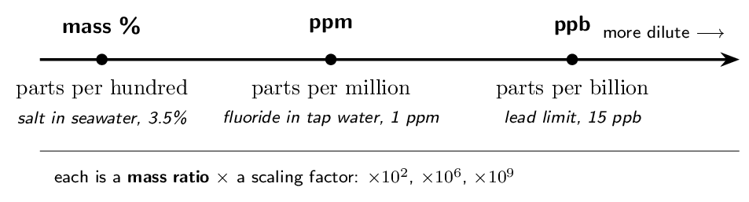
The denominator is the mass of the solution, meaning solute \(+\) solvent — not the mass of the solvent alone. Dissolving 15 g in 135 g of water gives a 150 g solution, so the answer is \(15/150\), not \(15/135\). The same total-versus-part trap as molarity, one ladder later.
The CED's topic 3.8 exclusion: “Calculations of molality, percent by mass, and percent by volume for solutions will not be assessed on the AP Exam.” The units still appear on labels, in data tables and in water-quality contexts, so you must be able to read and interpret them — and lab work uses them constantly. Learn the arithmetic here for the lab and for later courses; expect exam calculations to test molarity (Ladders 1–2) instead.
Total solution mass \(= 15.0 + 135.0 = 150.0\,\mathrm{g}\). \[ \text{mass \%} = \frac{15.0}{150.0} \times 100 = \mathbf{10.0\%} \]
(b) A water sample contains 2.5 mg of fluoride per 1.0 kg of water. Express this in ppm.Parts per million is the same ratio scaled by \(10^{6}\). Put both masses in the same unit first: 2.5 mg \(= 2.5e-3\,\mathrm{g}\) and 1.0 kg \(= 1.0e3\,\mathrm{g}\). \[ \frac{2.5e-3}{1.0e3} \times 10^{6} = \mathbf{2.5 \text{ ppm}} \]
The shortcut worth memorising. For dilute aqueous solutions the density is essentially 1.00 g/mL, so 1 kg of solution is 1 L and \[ 1 \text{ ppm} \;\approx\; 1\,\mathrm{mg/L} \] That is why water-quality reports quote mg/L and ppm interchangeably. It is an approximation that holds only because the solution is mostly water — do not use it for concentrated solutions or non-aqueous solvents.- Find the mass percent of 5.0 g of sugar in
95.0 g of water.
- A solution is 2.0% by mass. How much solute is in
250 g of it?
- Convert 0.0025 g of solute per 1000 g of
solution to ppm.
- Why is the denominator the mass of solution rather than of
solvent? it is a fraction of the whole mixture
(a) 5.0% (b) 5.0 g (c) 2.5 ppm (d) it is a fraction of the whole mixture
Ladder 4 • Mole fraction and molality
ZUM §11.1Four concentration units, and what separates them is entirely what sits in the denominator. Get that right and all four are one idea.
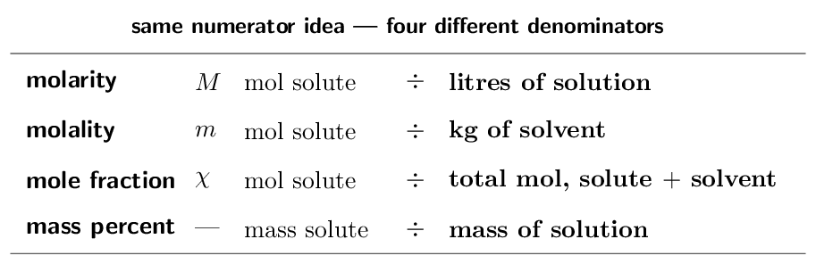
Molality exists mainly to support colligative properties, and those are §11.4–11.7, which this course skips. The CED goes further and names it directly: “calculations of molality … will not be assessed on the AP Exam” (topic 3.8 exclusion). So learn the definition and how it differs from molarity, but do not expect to compute with it. Two reasons it is defined against solvent mass rather than solution volume: mass does not change with temperature, whereas volume does, so molality is temperature-independent where molarity is not.
- A mixture holds 2.00 mol of \(\ce{A}\) and
6.00 mol of \(\ce{B}\). Find \(\chi_{\ce{A}}\).
- If \(\chi_{\ce{A}} = 0.35\) in a two-component mixture, what is
\(\chi_{\ce{B}}\)?
- Find the molality of 0.500 mol of solute in
2.00 kg of solvent.
- State the one difference between molarity and molality, and say
why molality does not change with temperature.
litres of solution vs kg of solvent; mass is temperature-independent
(a) 0.250 (b) 0.65 (c) 0.250 molal (d) litres of solution vs kg of solvent; mass is temperature-independent
Ladder 5 • The energetics of dissolving
ZUM §11.2Dissolving is not one event but three, and only the third releases energy. Whether a solution forms — and whether the beaker gets warm or cold — is the sum.
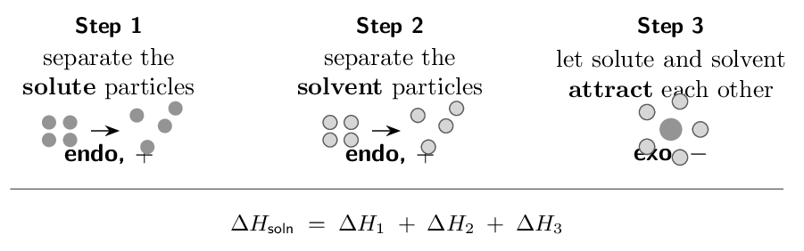
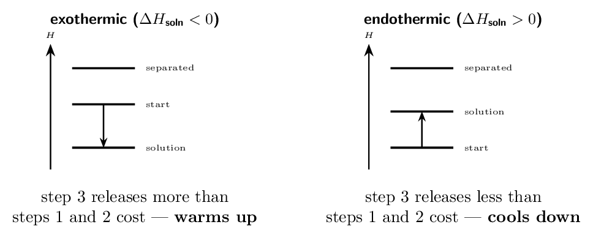
- Which of the three steps is exothermic, and why?
step 3 — attractions form
- Lattice breaking costs +700 kJ/mol and
hydration releases -750 kJ/mol. Find
\(\Delta H_{\text{soln}}\) and say whether the beaker warms or
cools. -50 kJ/mol, warms
- A cold pack contains \(\ce{NH4NO3}\). What is the sign of its
\(\Delta H_{\text{soln}}\)? positive
- \(\ce{NaCl}\) dissolving is endothermic, yet it dissolves readily.
Explain. entropy drives it
(a) step 3 — attractions form (b) -50 kJ/mol, warms (c) positive (d) entropy drives it
Ladder 6 • Like dissolves like
ZUM §11.2–11.3Step 3 of Ladder 5 only pays for steps 1 and 2 when the new solute–solvent attractions resemble the ones that were broken. That is the whole content of the slogan.
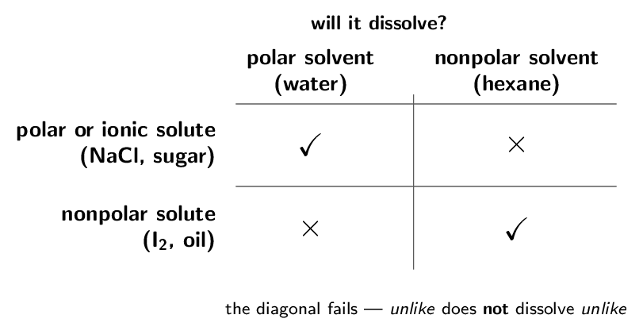
- Will \(\ce{I2}\) dissolve better in water or in \(\ce{CCl4}\)? Why?
\(\ce{CCl4}\) — both nonpolar
- Will \(\ce{NaCl}\) dissolve in hexane? Why not?
no — hexane cannot solvate ions
- Why is ethanol miscible with water in all proportions?
it hydrogen-bonds
- Which step of the cycle is the expensive one when a nonpolar
solute meets water? step 2
(a) \(\ce{CCl4}\) — both nonpolar (b) no — hexane cannot solvate ions (c) it hydrogen-bonds (d) step 2
Ladder 7 • Structure: chains, heads and tails
ZUM §11.3Most real molecules are neither purely polar nor purely nonpolar. They have a hydrophilic part that water likes and a hydrophobic part it does not, and solubility follows whichever wins.
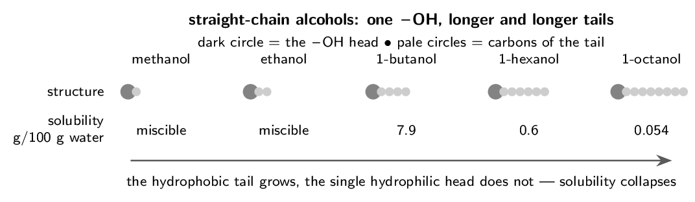
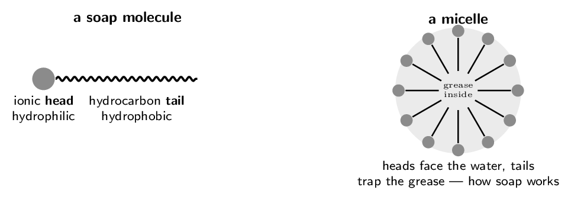
- Which is more soluble in water, 1-propanol or 1-heptanol? Why?
1-propanol — shorter tail
- Which part of a soap molecule dissolves grease?
the hydrocarbon tail
- Why is vitamin A stored in body fat but vitamin C is not?
A is hydrophobic, C is hydrophilic
- Would you expect ethanoic acid (\(\ce{CH3COOH}\)) to be water
soluble? Explain. yes — short chain, polar \(\ce{-COOH}\)
(a) 1-propanol — shorter tail (b) the hydrocarbon tail (c) A is hydrophobic, C is hydrophilic (d) yes — short chain, polar \(\ce{-COOH}\)
Ladder 8 • Saturated, unsaturated, supersaturated
ZUM §11.3Solubility is a limit, and a solution is classified by where it sits relative to that limit.
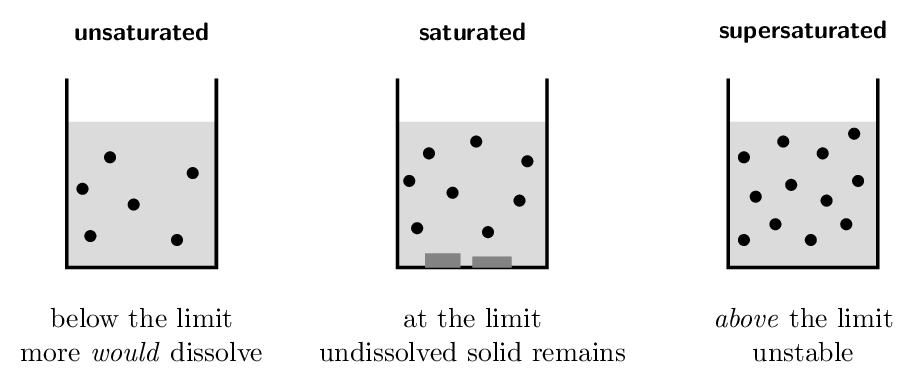
A supersaturated solution holds more solute than it should be able to. It is made by saturating a solution hot and then cooling it slowly and undisturbed, so the excess has no site on which to crystallise. Drop in a single seed crystal — or scratch the glass — and the whole excess crystallises at once, releasing its heat of crystallisation. That is exactly how a reusable sodium acetate hand warmer works, and why clicking its metal disc turns it solid and hot in seconds.
- 50 g of \(\ce{KNO3}\) is stirred into 100 g of
water at 20 °C. Is the solution saturated?
yes, with 18.4 g undissolved
- How much \(\ce{KNO3}\) crystallises if a solution saturated at
80 °C is cooled to 20 °C?
- How would you tell a supersaturated solution from a saturated
one? add a seed crystal
- Why does recrystallisation purify a compound?
impurities stay below their own limits
(a) yes, with 18.4 g undissolved (b) 137.4 g (c) add a seed crystal (d) impurities stay below their own limits
Ladder 9 • Temperature and solubility
ZUM §11.3Two rules, and they point in opposite directions — which is why you must know which kind of solute you have before you answer.
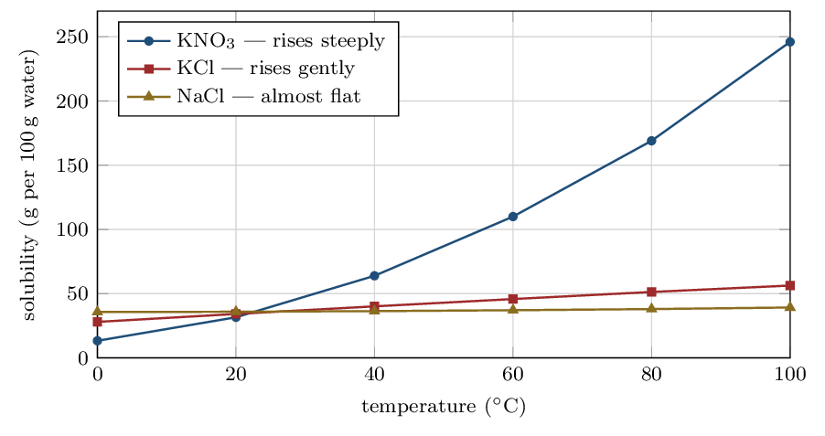
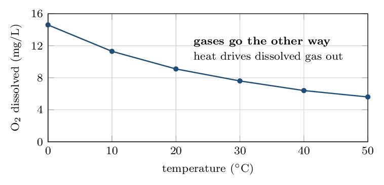
- Roughly how much \(\ce{KNO3}\) dissolves in 100 g of
water at 40 °C? about 64 g
- Which solid's solubility changes least with temperature?
\(\ce{NaCl}\)
- What happens to the solubility of a gas as temperature rises?
it falls
- Why does warm river water threaten fish even when it is
chemically clean? less dissolved oxygen
(a) about 64 g (b) \(\ce{NaCl}\) (c) it falls (d) less dissolved oxygen
Ladder 10 • Pressure and Henry's law
ZUM §11.3Pressure changes the solubility of gases and, for practical purposes, nothing else. Solids and liquids are already close-packed and barely compressible, so squeezing them changes very little.
\[ C = kP \qquad\text{or, comparing two conditions,}\qquad \frac{C_{1}}{P_{1}} = \frac{C_{2}}{P_{2}} \]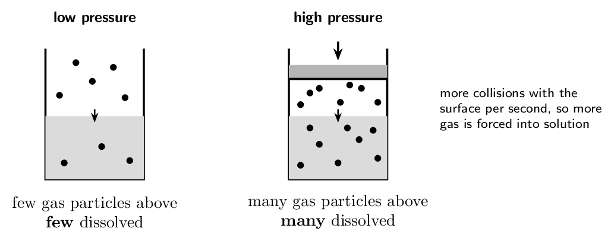
Solubility is directly proportional to partial pressure, so \[ C_{2} = C_{1} \times \frac{P_{2}}{P_{1}} = 1.3e-3 \times \frac{4.0}{1.0} = \mathbf{5.2e-3\,\mathrm{M}} \] Four times the pressure, four times the dissolved gas. No other variable enters.
Now the everyday version. A sealed can of fizzy drink is bottled under \(\ce{CO2}\) at several atmospheres, so a lot of \(\ce{CO2}\) is dissolved. Open it, and the pressure above the liquid drops to the \(\ce{CO2}\) partial pressure of ordinary air — about 0.0004 atm. The solubility collapses by a factor of thousands, the drink is now hugely supersaturated, and the excess \(\ce{CO2}\) escapes as bubbles. Leave it open and it goes flat, because the process runs to completion. Use partial pressure, not total. Henry's law depends on the partial pressure of that gas alone. Air is 21 % oxygen, so water open to the atmosphere at 1.0 atm total experiences an oxygen partial pressure of only 0.21 atm — which is why dissolved oxygen in a lake is so much lower than what pure \(\ce{O2}\) at 1 atm would give. And why divers care. At depth the total pressure is far above 1 atm, so far more nitrogen dissolves in the blood. Surface too quickly and it comes out of solution as bubbles inside the body — decompression sickness, Henry's law applied to a diver.- A gas dissolves to 0.020 M at 1.0 atm.
Find its solubility at 3.0 atm.
- A gas dissolves to 0.050 M at
2.5 atm. Find its solubility at
1.0 atm.
- Why does an open drink go flat? the \(\ce{CO2}\) partial pressure above it collapses
- Does raising the pressure increase the solubility of a solid?
Explain. no — solids are barely compressible
(a) 0.060 M (b) 0.020 M (c) the \(\ce{CO2}\) partial pressure above it collapses (d) no — solids are barely compressible
Mastery tracker
Tick a row only if all four YOUR TURN questions were right on the first attempt. Ladders 1–2 carry the exam weight directly; the CED excludes mass-percent and molality calculations from the exam (see the scope notes in Ladders 3–4), so treat those two rows as lab-and-later-courses material.
| First try? | Skill | Ladder | If not, re-read… |
|---|---|---|---|
| \(\square\) | molarity | 1 | per litre of solution |
| \(\square\) | dilution | 2 | moles are conserved |
| \(\square\) | mass percent, ppm, ppb | 3 | mass of solution |
| \(\square\) | mole fraction and molality | 4 | check the denominator |
| \(\square\) | energetics of dissolving | 5 | three steps, one exothermic |
| \(\square\) | like dissolves like | 6 | can step 3 pay for step 2? |
| \(\square\) | chains, heads and tails | 7 | the ratio decides |
| \(\square\) | saturated to supersaturated | 8 | solubility is a limit |
| \(\square\) | temperature and solubility | 9 | gases go the other way |
| \(\square\) | pressure and Henry's law | 10 | partial pressure, gases only |
10/10: you have Chapter 11's assessed content. It is a short chapter only because most of Zumdahl's Chapter 11 was cut from the CED — what remains is dense and heavily used elsewhere.
7–9: check which ladders missed. Ladders 1–4 are arithmetic and repair quickly with practice. Ladders 5–7 are conceptual, and a miss there usually means the three-step cycle has not clicked; that one takes a re-read rather than more problems.
6 or fewer: start with Ladders 1–3 and do nothing else until they are automatic. Concentration calculations are not really Chapter 11 content — they are the arithmetic of Units 4, 5, 6, 7 and 8 as well. Every titration, every equilibrium table, every rate law and every cell potential problem you meet for the rest of the year begins by putting a concentration into a formula. Time spent here is repaid many times over.